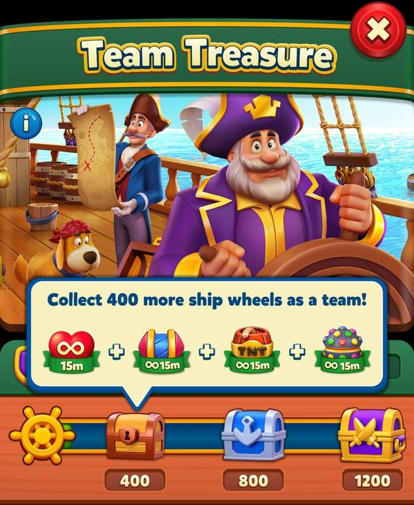
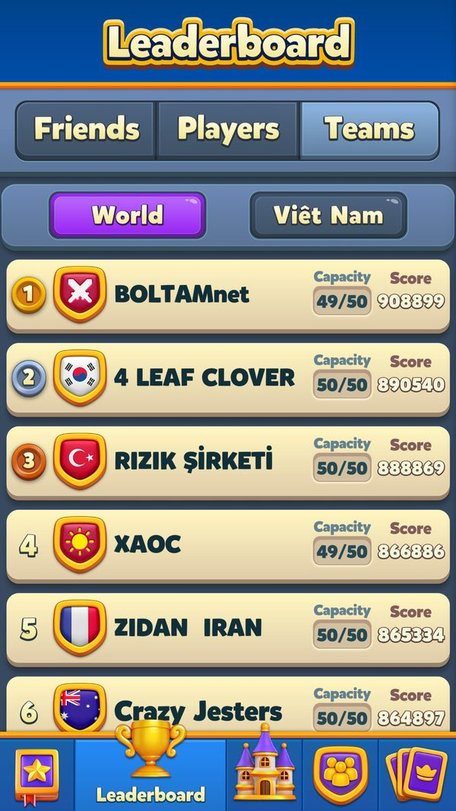
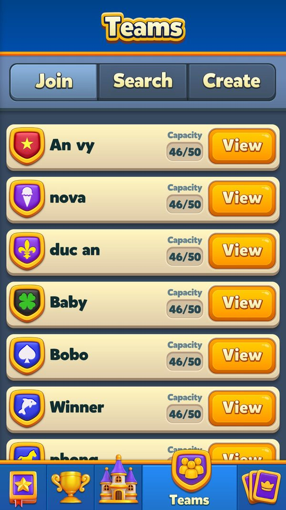
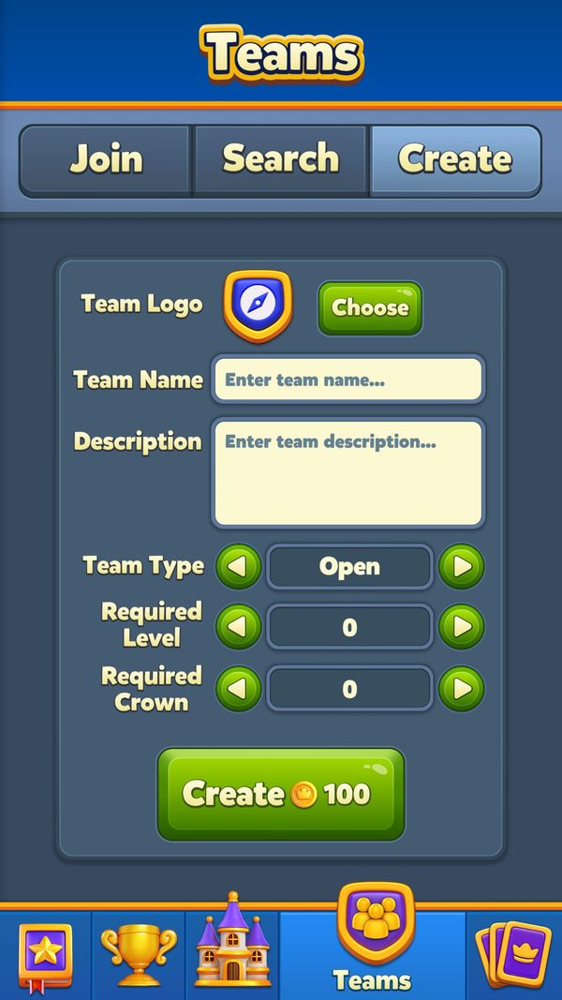
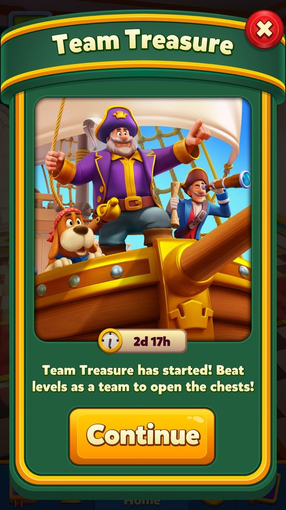

Event đội và hợp tác: Team Battle, Team Treasure, Team Tournament, Dragon Nest, Train Journey
Event dựa vào đội và bạn bè chọn event thế nào, tính đóng góp ra sao, chia thưởng cho ai, xử lý người rời đội và vào muộn thế nào?
Bài giải thích hai lớp event xã hội: event đội (cần vào Team từ level 21) và event hợp tác cặp (mời bạn, từ level 75). Đọc khoảng 8 phút. Đọc kèm bài Khung sự kiện (cách chọn event) và Kinh tế liên event (Magic Ball, vé được các event khác gắn thêm).
- ✅ Giá trị thật: lấy thẳng từ code, config server thật, save hoặc ảnh chụp khi chơi.
- 🧪 Ví dụ minh họa: con số đầu vào giả định để thấy cơ chế chạy; cách tính trong ví dụ là cách tính thật trong code.
- Tên kỹ thuật (class, method, key) để trong ngoặc hoặc ở dòng bằng chứng, để tra code khi cần.
Tóm tắt nhanh
- Cửa vào là Team ở level 21. Trước đó game đã 'mời' bằng lợi ích mạng miễn phí.Ví dụ ✅ Ảnh 06/10, level 11: bấm vào mạng → popup 'Free Lives – Join a team to get free lives!'; tab Teams ghi 'Reach Level 21 to join teams!'. Tạo đội tốn 100 C.
- Chỉ 1 event đội hiện mỗi lúc, theo thứ tự cứng. Team Tournament trước, rồi Team Battle, rồi Team Treasure.Ví dụ ✅ Thứ tự ghi trong client: mã 17 → 1 → 5. 🧪 Cả ba cùng chạy: đội ≥ 10 người thấy Team Tournament; đội 8 người không vào được Team Tournament (cần ≥ 10) nên thấy Team Battle (suy luận).
- Team Battle: các đội đua khiên, thưởng coin theo hạng đội. Thành viên phải đạt ngưỡng tối thiểu mới được tính là 'có đóng góp'.Ví dụ ✅ Đội hạng 1..5 nhận 6000 / 3000 / 2000 / 1500 / 1000 C (+ thưởng vật phẩm từ server); ngưỡng đóng góp 'ms' là số của server.
- Team Treasure: một thanh chung 3 rương, ai đủ điều kiện cũng nhận. Top 3 đóng góp nhận thêm 2 booster.Ví dụ ✅ Segment 3 (mặc định): rương ở 1000 / 2000 / 3000 bánh xe; segment 6: 2500 / 5000 / 8000.
- Team Tournament: thi đấu giữa các đội, có danh hiệu cá nhân. Đội phải có ≥ 10 người; không cho vào 3 giờ cuối.Ví dụ ✅ Vòng kế tiếp bắt đầu thứ Sáu 18/09/2026 08:01 UTC (lịch báo trước để hiện tooltip 'sắp diễn ra').
- Hợp tác cặp: điểm của hai người cộng chung. Mỗi cặp 3 mốc; đủ cặp thì có Grand Prize cosmetic.Ví dụ ✅ Dragon Nest tối đa 4 cặp, mốc 5000 / 10000 / 20000; đủ 4 rồng → 5000 C + 1 PL + 1 IG + khung hồ sơ. Train Journey tối đa 3 bạn, mốc cũng 5000 / 10000 / 20000.
- Đính chính: Dragon Nest không phải event đội. Nó chung khe với Train Journey, không thuộc bộ chọn đội.Ví dụ ✅ Bộ chọn đội chỉ có 3 event [17, 1, 5]; khe v291 số 2 là [14 Dragon Nest, 18 Train Journey].
Ví dụ xuyên suốt: một đội 20 người chơi Team Treasure
✅ Hai dòng đầu là ảnh chụp thật ngày 06/10 (tài khoản level 11, chưa có đội). 🧪 Các dòng sau giả định: người chơi A level 23 vào một đội 20 người, server xếp đội vào segment 3 → dùng target mặc định 1000 / 2000 / 3000 bánh xe; mùa thẻ và Train Journey đang chạy. Thưởng rương là config mặc định thật.
| Lúc | Người chơi làm gì | Game phản hồi | Kết quả |
|---|---|---|---|
| ✅ Level 11 | Bấm vào biểu tượng mạng khi đang đầy | Popup 'Free Lives – Join a team to get free lives!' | Game gieo lý do vào đội từ sớm |
| ✅ Level 11 | Mở tab Teams | 'Reach Level 21 to join teams!' | Chưa vào được |
| 🧪 Level 21 | A tìm đội và xin vào | Đội mở thì vào ngay; đội đóng thì chờ duyệt | A vào đội 20 người |
| 🧪 Level 23 | — | Bộ chọn đội: Team Tournament không chạy, Team Battle đã nhận xong → hiện Team Treasure | 1 icon event đội |
| 🧪 Ngày 1 | Cả đội chơi level, mỗi lần thắng cộng bánh xe vào thanh chung | Thanh đạt 1000 | Rương 1 mở cho mọi người đủ điều kiện: 15 ULV, 15 UR, 15 UT, 15 ULB + 1 CP2 (mùa thẻ) + 10 Tk (Train Journey) |
| 🧪 Ngày 2 | B vào đội khi thanh đã ở 1500 | Tính 'rương bắt đầu' của B là rương 2 | B không ăn theo rương 1 |
| 🧪 Ngày 2 | Thanh đạt 2000 | Rương 2: 30 ULV, 30 UR, 30 UT, 30 ULB, 1 H + 1 CP3 + 20 Tk | A và B cùng nhận |
| 🧪 Ngày 3 | C rời đội khi thanh ở 2500 | Cảnh báo mất quyền; C rời → cờ 'đã rời đội' | C mất quyền rương 3 |
| 🧪 Ngày 3 | Thanh đạt 3000 | Rương 3: 1 PL, 1 IG + 500 C (segment 3) + 1 CP4 + 30 Tk | Đội xong cả 3 rương |
| 🧪 Hết event | — | Top 3 đóng góp trong đội nhận thêm 2 booster theo hạng; ai đóng góp 0 không có phần này | A hạng 2 đóng góp → thêm 2 booster |
Thưởng rương là của chung (giữ cảm giác 'cả đội cùng thắng'), còn phần thưởng thêm chỉ cho người đóng góp nhiều nhất. Người vào muộn và người rời đội bị chặn đúng chỗ.



Ảnh chụp minh họa (8)
Ảnh chụp từ game thật trên LDPlayer. Bấm ảnh để phóng to, phím ← → để chuyển ảnh.









Luồng hoạt động (14 bước)
Tóm lại: vào đội (level 21) → bộ chọn đội chọn 1 event → server ghép nhóm đội → thắng level góp điểm → mở rương / mốc → hết giờ lấy bảng chốt → thưởng đội + thưởng đóng góp; hợp tác cặp: mời bạn → điểm cặp cộng chung → mốc cặp → Grand Prize
- 1Vào độiPlayerTừ level 21 tìm và xin vào đội (đội đóng thì chờ duyệt) hoặc tạo đội. Chat đội chạy qua kết nối riêng, là kênh xin mạng, tặng thẻ và mời event.Ví dụ ✅ Level 21 trên máy: tutorial ép bấm tab Teams → màn giới thiệu (FREE lives, FREE rewards) → danh sách đội gợi ý (đội 46/50) → tab Create tạo đội 100 C.
SocialManager.MinLevelToJoinTeam = 21; CreateTeamAmount = 100; JoinTeamHttpCommand; BackendTcpManager.TryConnect - 2Chọn 1 event độiClientBộ chọn đội xét 3 event theo thứ tự cứng, cùng luật: có quà chờ nhận → đang chơi → sẵn sàng. Hai event còn lại bị chặn.Ví dụ ✅ Thứ tự 17 Team Tournament → 1 Team Battle → 5 Team Treasure.
TeamEventsHelper.PrepareTeamEvents (pseudo-C); SelectTeamEvent; ProcessTeamEvents - 3Server ghép nhóm độiServerServer trả nhóm (đội và thành viên), phân khúc đội và token mang vào.Ví dụ ✅ Team Treasure nhận TeamScore, Segment, Progress, danh sách thành viên; cách ghép đội do server (A/B ghép đội 144/145).
facts/fb_schema.json (TeamBattleInfo, TeamTreasureInfo, TeamTournamentGroupInfo); TeamTournamentManager.EnterEventResponseReceived - 4Thắng level góp điểmPlayerMỗi level thắng cộng đơn vị của event (khiên, bánh xe, lance), có thể nhân hệ số. Hạng trong đội cập nhật ngay trên máy.Ví dụ 🧪 Thắng 1 level được 12 bánh xe, đang dùng token nhân × 2 → góp 24.
TeamBattleManager.UpdateRankLocally; TeamTreasureManager.WheelCollected; TeamTournamentManager.IncreaseLeaderboardScore
- 5Đồng bộ điểm độiClientGửi điểm lên server; gửi lỗi thì lưu lại và gửi lại.Ví dụ ✅ Team Tournament chờ 1 giờ sau ping mới hỏi lại; danh sách kèm ảnh đại diện mỗi 2 giờ.
TeamTreasureManager.SendUpdateRequest / RetryFailedUpdateRequest; TeamTournamentManager.PostPingRequestThreshold / ProfileRequestThreshold - 6Team Treasure: mở rương chungClientĐiểm đội đạt target của rương theo segment → mọi người đủ điều kiện (từ rương bắt đầu của mình, chưa rời đội) nhận.Ví dụ ✅ Rương 1 (segment 1: 250; segment 6: 2500): 15 ULV, 15 UR, 15 UT, 15 ULB; source 'TT-1'. ✅ Đội của tài khoản test (06/10): mốc 400 / 800 / 1200 bánh lái, rương 1 đúng 15' ∞ mạng + 15' ∞ Rocket/TNT/Light Ball.
TeamTreasureManager.ReachedTarget / CanParticipate / GiveRewards; team_treasure_default_config.json - 7Team Treasure: thưởng top 3 đóng gópClientChỉ hạng 1–3 trong đội và có đóng góp > 0 mới nhận 2 booster.Ví dụ ✅ Loại booster = 4 − hạng (hạng 1 → loại 3, hạng 3 → loại 1).
TeamTreasureManager.ClaimContributionReward; GetBoosterByRank; ContributionBoosterCount = 2 - 8Team Tournament: mốc cá nhân và danh hiệuPlayerLance cá nhân mở các mốc; đạt mốc Knight / Grand Knight thì nhận huy hiệu với hoạt cảnh áo giáp. Token mang vào đổi thành lance.Ví dụ 🧪 Đạt mốc Knight → hộp 'Badge reward' + hoạt cảnh; mốc và thưởng là số của server.
TeamTournamentManager.ConsumeSteps / GiveStepReward; TeamTournamentConfig.knightStep / grandKnightStep - 9Hết giờ: lấy bảng chốtClientHỏi bảng cuối tối đa 5 lần; đặt thông báo nhắc trước khi giải hết.Ví dụ ✅ Team Tournament đặt thông báo 75.600 giây (21 giờ).
TeamTournamentManager.TryGetInfoForFinishedEvent; FinishNotificationDurationInSec - 10Nhận thưởng độiPlayerTeam Battle trả coin theo hạng đội; Team Tournament trả rương theo hạng đội + thưởng đóng góp. Người dưới ngưỡng đi nhánh 'đóng không thưởng'.Ví dụ ✅ Team Battle đội hạng 2 → 3000 C (+ vật phẩm server). 🧪 Thành viên chỉ góp 5 khiên, dưới ngưỡng ms → không thưởng cá nhân.
TeamBattleManager.ClaimTeamBattle; TeamBattleConfigHelper.GetTeamRewardCoins; TeamTournamentManager.ClaimEvent; TrySendClaimForNoReward - 11Hợp tác cặp: mời bạnPlayerDialog mời chia 7 nhóm: lời mời đến, bạn bè đã / chưa mời, gợi ý đã / chưa mời, bạn cấp thấp, bạn đã đủ chỗ, bị từ chối. Mời cả đội tối đa 1 lần / ngày.Ví dụ ✅ Train Journey hiện tối đa 25 gợi ý; bạn đã đủ 3 người thì báo '{0} has 3 friends already!'.
DragonNestInviteHelper.TryFetchInvitations; TrainJourneyInviteHelper.SendInvitationRequest / ShowSuggestionLimit / TeamInviteDelayDayAmount - 12Hợp tác cặp: tích điểm chungPlayerDragon Nest: thắng level nhận Dragon Ball (bắt đầu 5), ném vào pinball 1X..50X. Train Journey: thắng level nhận vé (bắt đầu 5), quay bảng ô điểm / thưởng / hệ số. Điểm bạn về theo thời gian thực.Ví dụ 🧪 A ném bóng được 3000 điểm cho cặp với B, B quay bảng được 2500 → cặp 5500, qua mốc 1 (5000).
DragonNestManager.UseDragonBall / OnPartnerScoreUpdated; TrainJourneyManager.IncrementScore / OnPartnerScoreUpdated - 13Hợp tác cặp: mốc và Grand PrizeClientMỗi cặp 3 mốc tính trên tổng điểm hai người; đủ cặp ở mốc cuối thì nhận Grand Prize; vé / bóng dư đổi quà.Ví dụ ✅ Train Journey Grand Prize: 3000 C, 1 T, 1 L, 1 IG + tên kiểu SSN; 50 vé dư → 1 T, tối đa 3.
dragon_nest_default_config.json; TrainJourneyManager.ClaimRailOfPartner / ClaimGrandPrizeAndRemainingRewards - 14Lịch vòng sauServerGame hỏi server lịch event đội sắp tới để hiện tooltip trên Home.Ví dụ ✅ UpcomingTeamTournamentStartDate = 1789718460000 (thứ Sáu 18/09/2026 08:01 UTC).
UpcomingEventsManager.TrySendUpcomingEventsInfoRequest / OnInfoReceived; facts/runtime/server_fetched/GetUpcomingEventInfoRequest.json

Nhánh & ngoại lệ
| Khi | Thì | Ví dụ | Bằng chứng |
|---|---|---|---|
| Rời đội khi event đội đang chạy | Có cảnh báo; nếu vẫn rời thì mất phần còn lại của event. | 🧪 C rời đội lúc Team Treasure ở 2500/3000 → không nhận rương 3. Team Tournament có 3 mẫu cảnh báo theo mức thiệt hại. | TeamTreasureManager.LeaveTeam (leftTeam); TeamTournamentManager.GetTeamLeaveWarningMessage; TeamBattleManager.AfterLeaveTeam |
| Vào đội mới giữa event | Chỉ nhận từ rương chưa mở; không nhận hai lần trong cùng event. | 🧪 Vào khi thanh đã 1500 (đã mở rương 1) → bắt đầu từ rương 2. | TeamTreasureManager.GetStartingChest / CanParticipateEvent; TeamTournamentManager.JoinedTeam |
| Đội dưới 10 người (Team Tournament) | Không tham gia được; 3 giờ cuối cũng không cho vào. | ✅ MinTeamMemberCount = 10; LastHours = 10.800.000 ms. | TeamTournamentManager.get_TeamHasEnoughMembers / LastHours |
| Đội đạt rương cuối nhưng người chơi không đóng góp | Vẫn nhận rương (nếu đủ điều kiện) nhưng không có thưởng top 3. | 🧪 D không chơi level nào trong event: vẫn nhận 3 rương nhưng không có 2 booster đóng góp. | TeamTreasureManager.CheckForFinalTargetReachedWithoutContribution; ClaimContributionReward (điểm > 0) |
| Nhận thưởng Team Battle mà mất phản hồi | Mã nhóm lưu vào 'TBCNF'; lần sau gửi lại ngầm. | 🧪 Bấm nhận 3000 C rồi mất mạng → coin đã vào; mở lại game gửi lại lệnh nhận. | TeamBattleManager.ClaimNotFinished / TryClaimPreviousEvent |
| Gửi điểm Team Treasure lỗi | Lưu yêu cầu lỗi và gửi lại. | ✅ Log 'Send silent claim command for failed request'. | TeamTreasureManager.RetryFailedUpdateRequest |
| Bị kick khỏi đội | Xoá danh sách đồng đội, báo Team Battle và Team Tournament rằng người chơi không còn đội. | 🧪 Đội trưởng kick E giữa Team Battle → icon Team Battle của E biến mất. | SocialManager.MyUserKicked; TeamBattleManager.AfterLeaveTeam; TeamTournamentManager.UserHasNoTeam |
| Không ai nhận lời mời hợp tác | Vẫn chơi được phần cá nhân nhưng không có mốc cặp; hết event thì đóng dialog mời. | ✅ 'Train Journey is finished! You can not invite friends anymore!'. | TrainJourneyManager.MadeNoPartner; TrainJourneyInviteHelper.CloseInviteDialogIfEventIsFinished |
| Mất kết nối chat | Lệnh vào Train Journey / Dragon Nest (qua kết nối chat) thất bại; mời bạn khi offline bị chặn. | ✅ 'You need an internet connection to invite a friend!'. | TrainJourneyManager.TryEnterEvent; DragonNestManager.TryEnterEvent; TrainJourneyInviteHelper |
| Kịch bản pinball bị trùng | Dragon Nest không cho vào vòng mới. | ✅ 'Cant enter new event because scenarios cant be duplicated!'. | DragonNestManager.get_CanJoinEvent; DragonNestHelper.DuplicateScenarios |
So sánh 5 event xã hội
| Event | Điều kiện | Đơn vị góp | Thưởng chung | Thưởng cá nhân | Chống ăn theo | Ví dụ |
|---|---|---|---|---|---|---|
| Team Battle | level 22 + có đội | khiên | đội hạng 1..5: 6000 / 3000 / 2000 / 1500 / 1000 C + vật phẩm (server) | chỉ khi đạt ngưỡng ms | ngưỡng ms; A/B giới hạn đóng góp 216/217 | 🧪 Đội về hạng 3 → 2000 C cho người đạt ngưỡng |
| Team Treasure | level 23 + có đội | bánh xe | 3 rương theo segment | top 3: 2 booster | rương bắt đầu khi vào muộn; mất quyền khi rời; top 3 cần điểm > 0 | 🧪 Segment 3: rương ở 1000 / 2000 / 3000 |
| Team Tournament | level 23 + đội ≥ 10 người | lance (+ token) | rương theo hạng đội | mốc cá nhân + Knight / Grand Knight + thưởng đóng góp | quyền đóng góp; khoá 3 giờ cuối | ✅ Vòng tới: 18/09 08:01 UTC |
| Dragon Nest | level 75 + mời bạn | Dragon Ball → điểm pinball | mốc cặp 5000 / 10000 / 20000 | Grand Prize khi đủ 4 rồng | điểm là tổng hai người; tối đa 4 cặp | 🧪 4 bạn cùng tới mốc 3 → Grand Prize |
| Train Journey | level 75 + mời bạn | vé → điểm bảng ô | ray cặp 5000 / 10000 / 20000 | Grand Prize + đổi vé dư | tối đa 3 bạn; mời đội 1 lần / ngày | 🧪 2 bạn, mỗi cặp 3 ray → 6/9 ray |
Target và thưởng Team Treasure (mặc định)
Tóm lại: đội mạnh hơn → segment cao hơn → target gấp tới 10 lần, coin chỉ gấp 3,3 lần
Segment đội do server gán theo sức mạnh / quy mô đội (server, chưa đọc được). Đội mạnh làm nhiều hơn cho cùng loại thưởng — cố ý để đội yếu vẫn hoàn thành được.
| Segment đội | Rương 1 | Rương 2 | Rương 3 | Coin thêm rương 3 | Ví dụ |
|---|---|---|---|---|---|
| 1 | 250 | 500 | 800 |  300Coin 300Coin | 🧪 Đội nhỏ mới lập |
| 2 | 500 | 1000 | 1500 | 400Coin | |
| 3 | 1000 | 2000 | 3000 | 500Coin | 🧪 Đội 20 người ở ví dụ xuyên suốt |
| 4 | 1500 | 3000 | 5000 | 700Coin | |
| 5 | 2000 | 4000 | 6000 | 800Coin | |
| 6 | 2500 | 5000 | 8000 | 1000Coin | 🧪 Đội top 50/50 người |
| Thưởng chung |  ∞15 phútUnlimited Lives ∞15 phútUnlimited Lives  ∞15 phútUnlimited Rocket ∞15 phútUnlimited Rocket  ∞15 phútUnlimited TNT ∞15 phútUnlimited TNT  ∞15 phútUnlimited Light Ball ∞15 phútUnlimited Light Ball | ∞30 phútUnlimited Lives ∞30 phútUnlimited Rocket ∞30 phútUnlimited TNT ∞30 phútUnlimited Light Ball  1Royal Hammer 1Royal Hammer | 1Prelevel boosters 1All in-game boosters | – |
Mốc và Grand Prize của event hợp tác (mặc định)
- Hai event này được các event khác 'bơm' tiền tệ.Ví dụ ✅ Dragon Nest nhận Magic Ball từ 7 event (Book of Treasure bậc 23 → 200 Mb); Train Journey nhận vé từ 16 event (King's Cup hạng 1 → 50 Tk, Team Tournament hạng đội 1 → 50 Tk).
- Grand Prize là cosmetic hồ sơ — phần thưởng 'khoe' duy nhất của nhóm này, hợp lý vì cần 3–4 người bạn chơi tới cuối.Ví dụ ✅ Khung SFS 4000 (Dragon Nest), tên kiểu SSN 4000 (Train Journey).
| Mốc | Dragon Nest (mỗi rồng) | Train Journey (mỗi ray) | Ví dụ |
|---|---|---|---|
| Mốc 1 (5000 điểm) | 1Light Ball | 1Prelevel boosters  50Ticket 50Ticket | 🧪 Cặp đạt 5500 → nhận mốc 1 |
| Mốc 2 (10000 điểm) | 1Royal Hammer | 1Prelevel boosters  1Cannon 100Ticket 1Cannon 100Ticket | |
| Mốc 3 (20000 điểm) | 1Prelevel boosters | 1Prelevel boosters 1All in-game boosters | |
| Grand Prize | 5000 C, 1 PL, 1 IG + khung SFS 4000 | 3000Coin 1TNT 1Light Ball 1All in-game boosters | 🧪 Dragon Nest cần đủ 4 rồng ở mốc 3 |
| Đổi tiền dư | 50 Dragon Ball → 1 L, tối đa 3 | 50 vé → 1 T, tối đa 3 | 🧪 Còn 120 vé → 2 T |
Đóng góp và người ăn theo
Tóm lại: ngưỡng tối thiểu → thưởng phân tầng → quyền theo thời điểm
- Tầng 1: ngưỡng tối thiểu.Ví dụ ✅ Team Battle ngưỡng ms; Team Tournament cờ 'được đóng góp' và mã điểm không hợp lệ -1.
- Tầng 2: thưởng phân tầng.Ví dụ ✅ Team Treasure top 3 nhận thêm 2 booster; Team Tournament có thưởng đóng góp riêng.
- Tầng 3: quyền theo thời điểm.Ví dụ ✅ Rương bắt đầu khi vào muộn; mất quyền khi rời; Team Tournament khoá 3 giờ cuối.
- Nhưng rương chung vẫn cho mọi người đủ điều kiện — giữ cảm giác cả đội cùng thắng.Ví dụ 🧪 Người chỉ chơi 2 level vẫn nhận đủ 3 rương Team Treasure nếu ở trong đội từ đầu.
Số liệu chính
| Chỉ số | Giá trị | Số liệu do | Nguồn |
|---|---|---|---|
| Level vào đội / giá tạo đội | 21 / 100 C | Client + đo trên máy | SocialManager.MinLevelToJoinTeam; SocialManager.CreateTeamAmount; màn Teams › Create (06/10) |
| Thông báo mở Team trong game | 'Reach Level 21 to join teams!' | Đo trên máy | screenshots/tab_teams_locked.jpg (06/10) |
| Sức chứa đội | 50 người (đội top 49–50/50) | Đo trên máy | screenshots/leaderboard_teams.jpg (06/10) |
| Thứ tự event đội | 17 Team Tournament → 1 Team Battle → 5 Team Treasure | Client | TeamEventsHelper.PrepareTeamEvents (pseudo-C) |
| Coin Team Battle theo hạng đội | 6000 / 3000 / 2000 / 1500 / 1000 | Client | TeamBattleManager.Rewards (mảng tĩnh) |
| Thành viên tối thiểu Team Tournament | 10 | Client | TeamTournamentManager.MinTeamMemberCount |
| Khoá cuối giải | 3 giờ | Client | TeamBattleManager.LastHours; TeamTournamentManager.LastHours = 10.800.000 |
| Top đóng góp có thưởng Team Treasure | 3 người, 2 booster mỗi người | Client | TeamTreasureManager.ContributionRankLimit / ContributionBoosterCount |
| Chỗ hợp tác | Dragon Nest 4 / Train Journey 3 | Client | DragonNestManager.MaxPartnerCount; TrainJourneyManager.MaxPartnerCount |
| Team Tournament kế tiếp | 18/09/2026 08:01 UTC | Server | facts/runtime/server_fetched/GetUpcomingEventInfoRequest.json |
| Mốc rương Team Treasure (đội test) | 400 / 800 / 1200 | Đo trên máy | screenshots/team_treasure_chest_milestones.jpg (06/10); config: 250..2500 / 500..5000 / 800..8000 theo segment |
Đánh giá
Thang 1–5 (với tiêu chí rủi ro, 5 = rủi ro cao). Trung bình: 3.2.
| Tiêu chí | Điểm | Nhận xét |
|---|---|---|
| Giữ chân xã hội | 5/5 | Đội + chat + xin mạng + tặng thẻ + 3 event đội + 2 hợp tác tạo nghĩa vụ 'không bỏ đội'. Ví dụ: game mời vào đội từ level 11 bằng mạng miễn phí. |
| Công bằng đóng góp | 4/5 | Ngưỡng ms, top 3, rương bắt đầu, mất quyền khi rời; nhưng ms và segment ở server nên khó kiểm chứng. |
| Giá trị phần thưởng | 3/5 | Phần lớn là coin / booster / vô hạn ngắn; cosmetic chỉ ở Grand Prize hợp tác và huy hiệu Knight. |
| Phụ thuộc mạng lưới bạn | 2/5 | Không có đội hay bạn hoạt động là mất cả nhóm event; hợp tác không thấy cơ chế ghép người lạ ngoài 'gợi ý'. |
| Dễ vận hành | 2/5 | Team Tournament / Team Battle không có config mặc định; ghép đội, segment, thưởng đều ở server; thêm kết nối thời gian thực. |
| Rủi ro | 3/5 | Đội 'chết' làm thanh chung không bao giờ đầy; rời đội mất thưởng dễ gây khiếu nại. |
- 1 event đội mỗi lúc giúp cả đội dồn sức vào một mục tiêu.
- Ba tầng chống ăn theo nhưng vẫn giữ thưởng chung.
- Hợp tác cặp tạo vòng lặp mời bạn (bạn bè, gợi ý, mời cả đội) và thưởng cosmetic đáng khoe.
- Thứ tự event đội ghi cứng trong client.
- Ngưỡng cứng 10 người đẩy người chơi rời đội nhỏ sang đội lớn.
- Hợp tác phụ thuộc bạn thật, không có bạn đồng hành dự phòng.
- Đội hết hoạt động → trải nghiệm thất bại tập thể.
- Mất toàn bộ phần còn lại khi rời đội có thể khiến người chơi 'mắc kẹt' trong đội không hợp.
- Cho đội nhỏ vào giải đội bằng bảng riêng theo quy mô (ví dụ đội 5–9 người đấu với nhau) thay vì ngưỡng cứng 10.
- Đưa thứ tự ưu tiên event đội lên config server.
- Thêm bạn đồng hành dự phòng (người lạ cùng segment hoặc bot) nếu sau 24 giờ người chơi chưa có bạn nào nhận lời.
- Khi rời đội, giữ phần rương đã đạt (ví dụ rương 1–2) để giảm cảm giác bị phạt.
Liên quan
Đội (Team) Team Battle (TB) Team Treasure Team Tournament Dragon Nest Train Journey (TJ) Bạn bè (Friends) Khung sự kiện (Events) Team Gift Offer (quà cho đội) Mạng (Lives) Bảng xếp hạng (Leaderboard) 📊 Khung sự kiện: một event sống thế nào từ lúc server gửi tới lúc đóng 📊 Thi đấu cá nhân: đua, xếp hạng và người chơi ảo 📊 Mùa thẻ (Seasonal Card Collection): gói thẻ, thẻ trùng và sợi dây nối mọi event 📊 Event tiến trình & thu thập: tiền tệ sự kiện, minigame và bậc thưởng 📊 Kinh tế liên event: một level thắng nuôi bao nhiêu thanh tiến độ 📊 Offer gắn tiến trình, đội và người quay lại
Nguồn đã đọc
gdd/Team.jsongdd/TeamBattle.jsongdd/TeamTreasure.jsongdd/TeamTournament.jsongdd/DragonNest.jsongdd/TrainJourney.jsonfeatures/TeamEventsHelper.mdTeamEventsHelper.PrepareTeamEvents (pseudo-C)Resources/team_treasure_default_config.jsonResources/dragon_nest_default_config.jsonResources/train_journey_default_config.jsonfacts/fb_schema.json (TeamBattleInfo, TeamTreasureInfo, TeamTournamentGroupInfo)facts/runtime/server_fetched/GetTeamBattleInfoRequest.json, GetTeamTournamentInfoRequest.json, GetUpcomingEventInfoRequest.jsonfacts/runtime/server_configs/Mem_EventDependencyConfig_v291.jsonfacts/runtime/server_configs/PingResponse_SeasonalCardCollectionInfo_Config_v305.json (gói thẻ Team Treasure)feature_extras.json + screenshots/ (đo trên máy 06/10/2026)